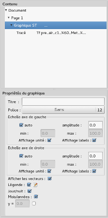

La sélection d'un élément dans la zone contenu (zone de création / modification du document) provoque la mise à jour de la zone propriétés située juste en dessous (zone de configuration des éléments).
